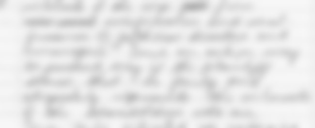
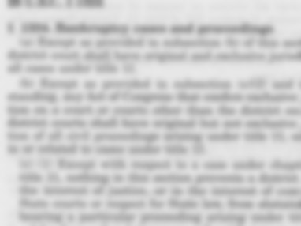
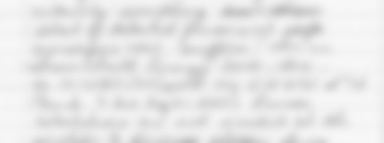
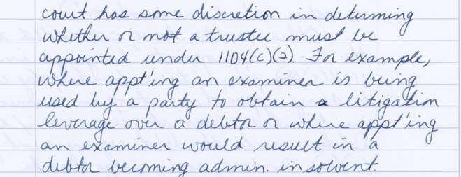
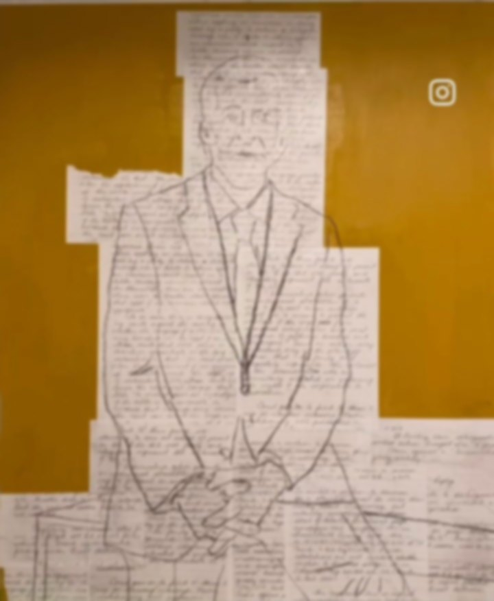
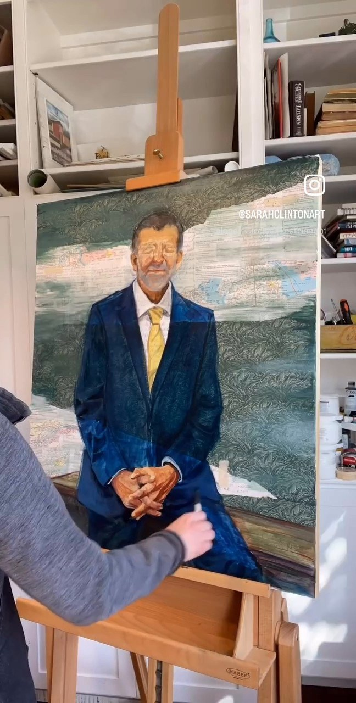
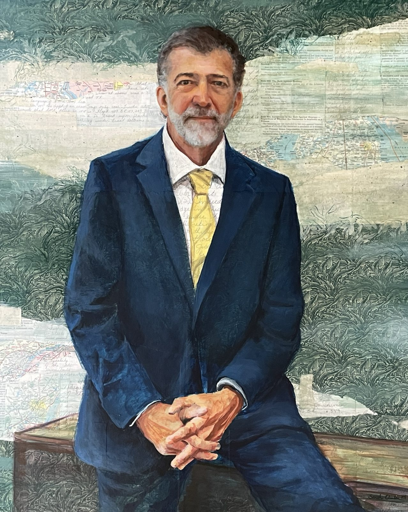

The words
Handwritten notes and pages of law become the surface of the painting.

The drawing
The figure is drawn over the collage, then blocked in with thin color.

The paint
Layer by layer the paint covers the words, but never all of them.

The portrait
36x30 inches · Acrylic paint on collaged background of personal handwritten notes, references and maps. · 2024